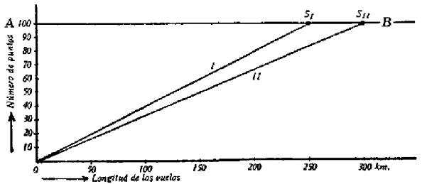
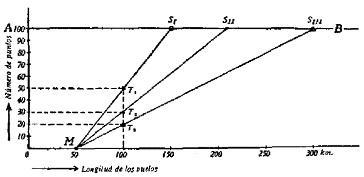
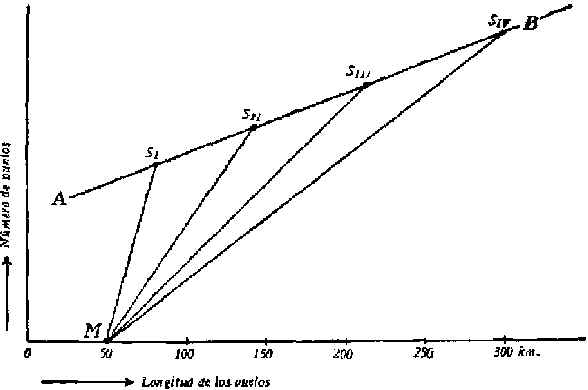
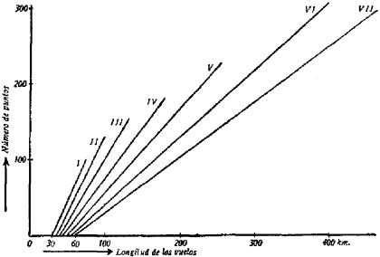
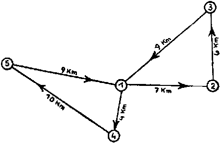

Manual del Vuelo a Vela
Wolf Hirth
1942
Concurso y criterios de valoración de pruebas
por
J. KUNZ
Para estimar
los resultados de un concurso hay dos puntos de vista: el uno es apreciar la magnitud de
la prueba según el resultado numérico del vuelo, con el cual el valor de la prueba es la
medida absoluta del vuelo. La prueba de distancia se aprecia por el número de kilómetros
; la de altura por los metros alcanzados sobre el punto de salida. Esta forma de estimar
las pruebas es la que se usa, por ejemplo, en la declaración de marcas dé vuelo. En este
criterio no se tiene en cuenta el grado de dificultad que ha supuesto para el piloto la
ejecución de la prueba, y no puede compararse un vuelo de marca con otro que sea, por
ejemplo, de menor distancia, pero en cambio esté ejecutado en peores condiciones
meteorológicas.
Otro
criterio de estimación de las pruebas es el de atender al grado de dificultad para el
piloto. En este caso se comparan los vuelos realizados en diferentes condiciones, con
arreglo a la dificultad que ofrecían, y con lo cual se trata de dar valor a la
habilidad del piloto. Con este criterio se supone que vuelos de igual distancia pueden
representar pruebas de diferente valor cuando han sido hechos, por ejemplo, con
circunstancias meteorológicas distintas. Naturalmente que las mismas consideraciones
pueden aplicarse a los vuelos de altura o de otro género.
Estos dos
diferentes criterios resultan de las siguientes consideraciones:
El éxito
de un vuelo a vela, sea de distancia, de altura de otro género, depende de diferentes
factores, que son:
1.º La
habilidad del piloto, a la que contribuye su disposición natural y su práctica.
2.º Las
cualidades del velero.
3.º
Las
circunstancias meteorológicas. Estas desempeñan en la cuestión de que se trata un papel
de carácter esencial, pues, de una parte, son la base del éxito de un vuelo y, por otra
parte, son las que dan lugar a que pilotos de igual capacidad obtengan resultados
diferentes.
4.º
Los
trabajos preparativos y las disposiciones tomadas, es decir, la dirección y
organización del vuelo.
Este
último punto es en muchos casos de gran importancia. Especialmente en los vuelos de
marca, además del propio vuelo, hay una enorme tarea en común, no sólo como trabajo
preparatorio de todos los que constituyen un grupo de vuelo a vela, sino también un
esfuerzo de colaboración con la Técnica y la Ciencia. Las marcas de vuelo no resultan de
volar, por casualidad, en determinadas circunstancias meteorológicas favorables, sino
que, en la mayor parte de los casos, son el resultado de trabajos preliminares
sistemáticos y de gran número de vuelos previos de ensayo. Las situaciones
meteorológicas para los grandes éxitos son relativamente raras, y por lo mismo hay que
hacer los trabajos preparatorios precisos para encontrarlas v utilizarlas. Muchas veces
ocurre también que el tiempo de qué se puede disponer para aprovechar una tal situación
es corto, y en ese caso tener hechos los preparativos es cuestión decisiva; por lo tanto,
el valor de un gran vuelo puede representar también, en gran parte, una marca de
organización. Igualmente hay que tener en cuenta, en la apreciación del valor de un
éxito, no sólo la perfección de la organización técnica, sino el hecho de contar con
pilotos capaces de llevar a cabo una proeza por tener instrucción y preparación
adecuadas.
Son
muchos los factores que pueden ejercer influencia preponderante en el éxito de un vuelo,
y no es posible establecer una fórmula en la que intervengan todos esos factores
apreciados en forma numérica. Consiguientemente, el resultado del vuelo es, por decirlo
así, la expresión total del conjunto que ha contribuido al éxito. La medida en que la
habilidad del piloto o la situación meteorológica u otro de los factores que intervienen
han participado para lograr el éxito, no se puede valorar exactamente. Su valoración
está en el resultado, cuando se dicen tantos «km.» en el vuelo de distancia, o tantos
«m.» en el vuelo de altura, y ahí, en esos números, está comprendido el valor de todo
el conjunto de circunstancias que han intervenido en el vuelo.
Este
criterio de valoración puede designarse como «valoración general».
Sin
embargo, siempre podrá presentarse frente a ese criterio el deseo de valorar, única y
simplemente, la capacidad del piloto, y esto no se puede hacer con vuelos en
diferentes lugares y realizados en momentos diferentes; pero es posible efectuarlo en un
concurso. Una valoración hecha atendiendo exclusivamente a que resulte expresada la
capacidad y habilidad del piloto se puede llamar valoración deportiva.
Para
formarse idea clara del alcance de este concepto hay que hacer la siguiente pregunta: ¿
Qué objeto tiene la estimación de las pruebas ? O, mejor: ¿ Qué objeto tiene la
valoración ? Esta pregunta se responde por sí misma. La valoración de las pruebas es el
fundamento psicológico del progreso de las marcas; es el acicate para alcanzar cada vez
mejores resultados, y los grandes éxitos del vuelo a vela están basados precisamente en
esa lucha por obtener mayor valoración.
Por
consiguiente, se deduce que existen dos criterios fundamentales de valoración y que ambos
tienen igual razón de ser, de modo que en la práctica habrá que decidirse claramente
por uno o por otro, evitando la confusión cuando se pueda producir, en aquellos casos en
que el criterio de valoración no sea evidente.
Las dos
formas más claras de ambos modos de valorar las pruebas son: para la «valoración
general », el establecimiento de marcas de vuelo ; para la «valoración deportiva», el
vuelo a vela olímpico. En las luchas de vuelo sin motor de una Olimpíada, solamente se
debe valorar la capacidad del piloto; por consiguiente, todos los participantes deberán
pilotar el mismo velero. Para un piloto de menos peso se deberá prescribir el llevar
determinado lastre con objeto de eliminar toda causa que pueda favorecer a uno de los
concursantes. Los resultados de este criterio en los juegos olímpicos, en donde
solamente se atiende al valor deportivo, son necesariamente satisfactorios.
En
consecuencia, con este criterio del «valor deportivo» y con el empleo de un solo tipo de
aparato, resulta de modo evidente que el vuelo a vela como juego olímpico no tiene
influencia alguna, o la ejerce muy pequeña, sobre el progreso de las cualidades de los
veleros. De aquí resulta que no es aconsejable aplicar a otros concursos de vuelo sin
motor la unificación de modelos de aparatos, puesto que aquélla quitaría el estímulo
para el progreso de los veleros. Bastará en otros casos con hacer una clasificación por
categorías, atendiendo a las características de los aparatos usados en los concursos y
así se garantizaría suficientemente la «valoración deportiva» de los pilotos. Pero
nunca se deberá establecer en un concurso más de dos categorías.
En
casi
todos los concursos de aviación debe atenderse fundamentalmente
a la
«valoración deportiva» y, por lo tanto,
habrá
de tener carácter preponderante no sólo la capacidad del piloto como tal, sino también
la que demuestre especialmente en las pruebas del concurso.

Fig. 152
Pero esto no
quiere decir que se haga posible para todos los pilotos la participación en el concurso
en las mismas condiciones, sino que también hay que valorar los resultados de cada vuelo
sobre la consideración de la proeza realizada por cada piloto atendiendo a la diversidad
de las circunstancias meteorológicas en los distintos días del concurso. Así un vuelo
de 10 kilómetros en un buen día de térmica debe merecer menos puntos que si se
realizase en otro día de peores condiciones de tiempo. Esta fue la razón que se tuvo
para establecer en los concursos del Rhön el «factor de tiempo», abandonando el
criterio usado antes, de la simple apreciación de la distancia. El establecimiento de
la valoración empleando el factor de tiempo da lugar a la idea de la valoración
deportiva y debe eliminar la influencia de la situación meteorológica, midiendo
solamente, mediante el número de puntos atribuido en cada caso, la capacidad demostrada
por el piloto en la ejecución del vuelo. El modo más sencillo de conseguir esa
valoración es dar al mejor vuelo del día el máximo de puntos, por ejemplo, 100. y luego
asignar a los demás vuelos los números de puntos correspondientes proporcionalmente a su
valor relativo. Así (ejemplo 1), en un cierto día, la mayor distancia ha sido, por
ejemplo, 250 km. y a este vuelo se le asignan 100 puntos; a otro vuelo de 150 km. se le
asignarán 60 puntos, mientras que en otro día (ejemplo II) el mejor
vuelo es de 300 km., que
es el que se valora con 100 puntos, y a otro vuelo de 250 km. le corresponderán 83,4
puntos, y a un tercero de 150 km., 50. La figura 152 representa gráficamente este
sistema de valoración.

Fig. 153
La valoración
máxima de cada día se lleva sobre la línea A-B en el punto 5, y todos los demás puntos
de valoración estarán situados en la recta que une el punto S con el punto origen O. Sin
embargo, para poder clasificar un vuelo es conveniente que en un concurso se establezca un
mínimo de valoración. Así, aceptando un mínimo de 50 km. en la distancia, en la
representación gráfica se traslada el punto O al punto M, y entonces esa representación
toma el aspecto que se ve en la figura 153, en la cual están marcados los puntos
representativos de los mejores vuelos de tres días diferentes:
S1 = 150
km.; S2 = 210; S3 = 300.
Se ve,
pues, que un vuelo de 100 km. realizado en tres días diferentes tiene valoraciones
distintas, T1, T2 T3, que
están relacionadas con el valor del mejor vuelo de cada día. Esto quiere decir, con
otras palabras, que su valor está medido con arreglo al grado de bondad de la situación
meteorológica.
Este
sistema de valoración radica en que los mejores vuelos de cada día se valoran siempre
con el mismo número de puntos : los 100 que
se han supuesto. Pero así no se ha tenido en cuenta que la fatiga corporal que para los
pilotos representan los vuelos de distancia, aumenta con ésta y no solamente durante la
ejecución del vuelo, sino muy especialmente en el trabajo de regresar el aparato al punto
de
Hasta puede ocurrir que la distancia recorrida sea tan grande que no pueda regresar el
piloto hasta el día siguiente, y para las pruebas de este día esté recién llegado o no
pueda siquiera participar en ellas, mientras que otro piloto que el día antes ha hecho un
pequeño recorrido, está completamente descansado y fresco para poder tomar parte en
las pruebas. Este cansancio corporal deberá ser valorado, si se quiere estimar
completamente el valor deportivo de las pruebas. Por estas razones no se debe asignar de
un modo general la puntuación 100 a la prueba mejor de cada día, sino que debe haber una
escala creciente con la magnitud de la prueba realizada.

Fig. 154
Atendiendo a
estas consideraciones, la línea AB de referencia, para los mejores vuelos de cada día,
no
deberá
ser horizontal, sino que tendrá cierta pendiente (Fig. 154).
Finalmente,
este sistema de valoración se acaba de completar asignando mínimos diferentes a cada
día, según la magnitud del mejor vuelo correspondiente, y además, para simplificar y no
tener que atender al gran número de casos que podrían presentarse, se establecen, por
ejemplo, siete casos, en los que se incluyen todos los que se presentan.

Fig. 155
Con todo ello
la gráfica del sistema es la que figura a continuación:
Este
sistema de valoración se puede compendiar en una fórmula muy sencilla;
Puntuación (Distancia-Mínima). Factor de tiempo o sea:
P = (Km.-M) . F.
Los
valores de M, distancia mínima y de F, factor de tiempo se deducen de la tabla siguiente,
según el mejor vuelo de cada día.
|
Distancia
Mínima |
Factor de
Tiempo |
Distancia media
recorrida por el grupo que va en cabeza |
|
Límite
Inferior |
Límite
superior |
|||
I |
30 |
2,5 |
0
km. |
75
km. |
II |
35 |
2 |
75,1
km. |
100
km. |
III |
40 |
1,62 |
100,1
km. |
135
km. |
IV |
45 |
1,35 |
135,1
km. |
180
km. |
V |
50 |
1,1 |
180,1
km. |
255
km. |
VI |
55 |
0,9 |
255,1
km. |
400
km. |
VII |
60 |
0,75 |
400,1 km. |
- |
Estos valores
se han calculado y experimentado en los concursos del Rhön. Para evitar que una
casualidad determine el valor del factor de tiempo. Éste se ha calculado, no partiendo
del único vuelo mejor del día, sino del vuelo medio realizado por el grupo de los que
hayan alcanzado mayores distancias en el día de que se trate.
El
establecer este sistema de valoración no fue sólo para tratar de conseguir una
valoración deportiva: hubo también otra razón que hizo llegar a ese sistema. En los
primeros concursos del Rhön, hechos valorando las pruebas, había días en los que no se
volaba, porque las probabilidades que se presentaban eran sólo para conseguir distancias
cortas, y la puntuación para esos vuelos era tan pequeña que no merecía la pena
hacerlos. Ocurría a menudo que, sin embargo, en tales días, las circunstancias
meteorológicas en otros lugares que no fuesen el Rhön no eran tan malas, y hasta en
algunos eran buenas. Era evidente, por tanto, que debía establecerse un sistema de
valoración que prometiese una puntuación aceptable para los vuelos cortos y hubiese así
un estímulo para realizarlos, con lo que, tal vez, al intentarlos, sería posible
llegar a lugares en los que hubiese circunstancias meteorológicas favorables. Los
éxitos alcanzados en los concursos del Rhön en 1936 y 1937 vinieron a comprobar lo
acertado de estas previsiones.
Como se
comprende, el factor de tiempo se puede extender también a los vuelos de altura; pero,
sin embargo, se ha debido renunciar a ello, en tanto que el valor de la altura se mire
como complementario para la valoración de la distancia, puesto que, como se sabe, la
altura conseguida se puede transformar en distancia.
Los
concursos no tienen solamente el objeto de determinar, como resultado de la lucha,
quién es el mejor deportista y dar lugar así al estímulo para que se eleven las marcas
conseguidas; sirven también para atraer y establecer contacto entre los deportistas
competidores y el público. La fuerza de atracción y su importancia, en las diferentes
clases de deportes, residen casi exclusivamente en la organización de las pruebas. El
gusto y atractivo de un deporte para los espectadores se despierta y activa por el deporte
mismo y depende de la belleza del deporte de que se trate, del grado de destreza que exija
su práctica y, especialmente, de la emoción que suscite el contemplar el concurso. No
hay que descuidar la relación entre el espectador y el concurso de vuelo a vela. A la
belleza de volar sin motor y a la destreza necesaria para practicarlo nada hay que
añadir. Pero a estos concursos se les podría dar algo más de emoción. La emoción se
logra con los cambios en las situaciones, y este aspecto del deporte apenas se presenta en
los concursos de vuelo sin motor, puesto que la verdadera lucha del concurso se verifica
en otro lugar que en el punto de salida de los veleros y no se tiene visión alguna de
conjunto, excepción hecha de las horas del atardecer o las primeras de la noche, cuando
llegan las noticias de los aterrizajes.
Un
concurso de vuelo a vela, en el que se hubiese de despertar emoción, necesita sin duda un
cierto enlace local. Podría hacerse sujetándose a las siguientes reglas: el concurso
habría de desarrollarse en el espacio triangular formado por tres objetivos fijados,
triángulo que habría de ser recorrido - y esto sería lo que más atención habría
de despertar -varias veces. De este modo el concurso, al menos en su gran parte, se
desarrollaría a la vista de los espectadores, y no sólo se vería cuál era el piloto
que llegaba el primero, sino que se comentarían vivamente las alteraciones que iría
teniendo el tiempo empleado por los diversos pilotos y los cambios en sus posiciones
relativas. Esta lucha daría lugar a muchos momentos de emoción por la comparación de la
situación de cada instante con las de otros anteriores. Claro es que el recorrido que
se escogiese no habría de ser muy largo; podría ser de 20 a 30 km., sin que fuese
preciso que las distancias entre los puntos fijados, 1, 2 y 3 hubiesen de ser iguales.
Podría también hacerse que una vez recorrida la primera pista 1-2-3-1, hubiese de
hacerse luego otro recorrido diferente comprendiendo, por ejemplo, los puntos 1-4-5-1
(véase la Fig. 156).

Fig. 156
Los concursos
de vuelo a vela pueden ser de diferentes clases. Se pueden establecer vuelos de distancia
o vuelos con objetivo, y éstos se pueden combinar con vuelo de altura o valorando el
tiempo empleado. Igualmente se pueden permitir distintas clases de vuelo para aprovechar
mejor la diversidad de las condiciones meteorológicas de los diferentes días. También
es factible, en oposición a lo anterior, fijar un determinado recorrido de dimensiones
importantes como vuelo con objetivo y en el que se fijen aterrizajes intermedios,
exigiendo que ese vuelo se ejecutase con objetivo, hasta con viento contrario. No
obstante, en cada caso, las prescripciones del concurso deberían hacerse de modo que se
valorase el aspecto deportivo de las pruebas, es decir, que se hiciesen esas
prescripciones atendiendo a la habilidad del piloto en la prueba para valorar el vuelo. No
deberán emplearse fórmulas complicadas en las cuales se incluyan las características
de los veleros. Esto da lugar, generalmente, a lo contrario que se desea, que es apreciar
el valor deportivo del piloto. Con el tiempo llegarán a cristalizar fórmulas apropiadas
de valoración que puedan aplicarse en concursos internacionales, como ya se ha hecho con
otras clases de deportes.